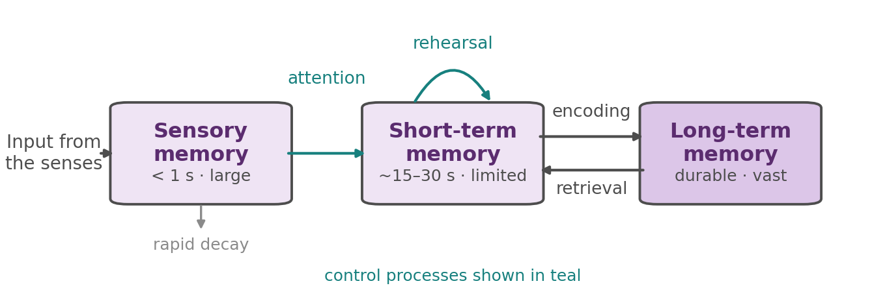
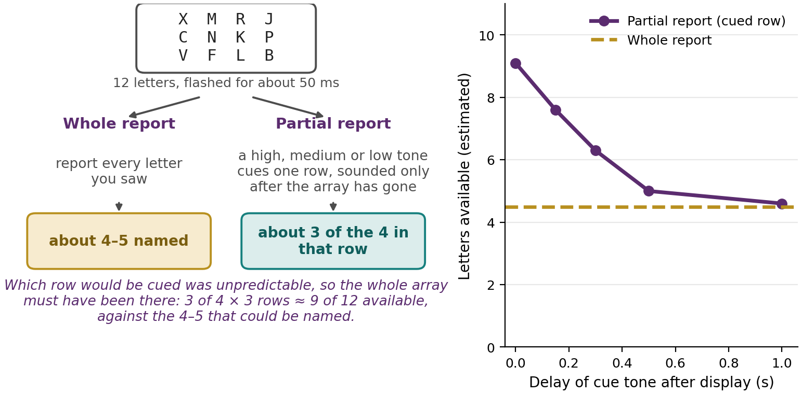
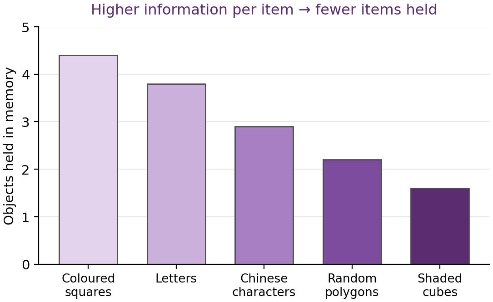
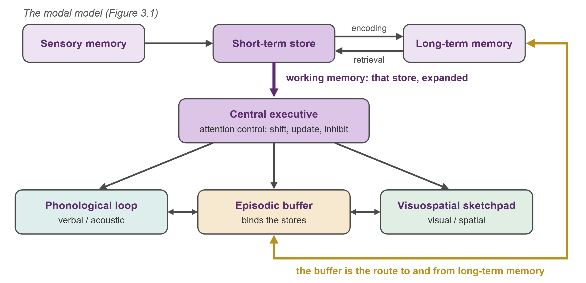
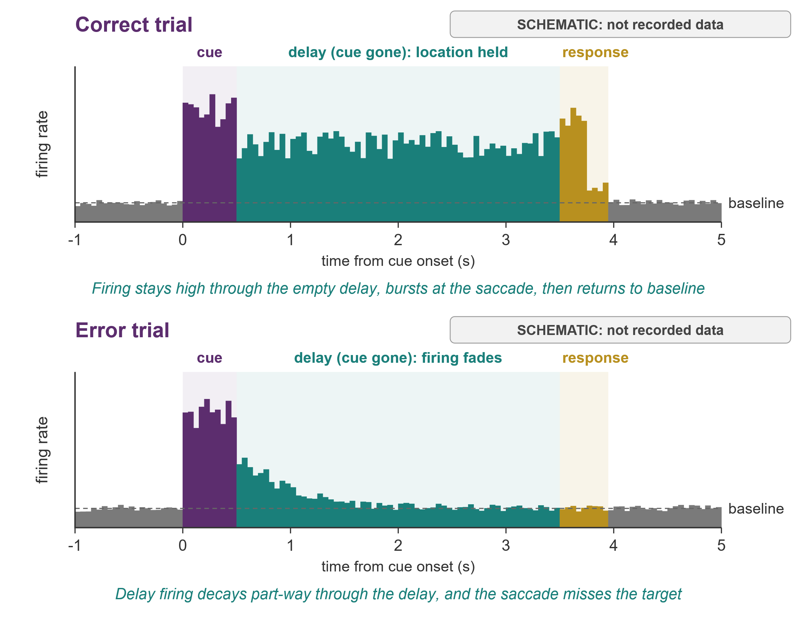
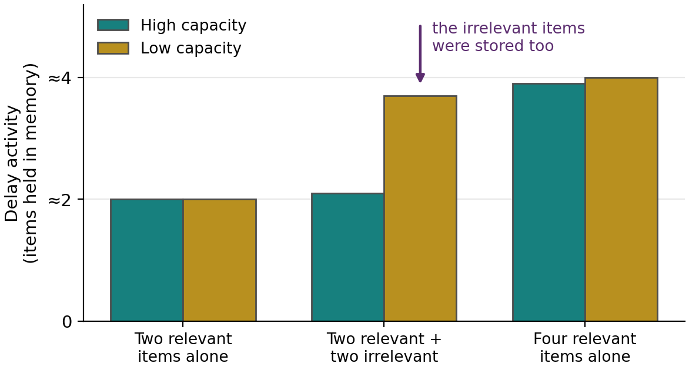

Chapter 3
Short-Term and Working Memory
Where this chapter sits
Chapter 2 ended somewhere the filter models never reached. Having spent most of its length on how attention selects, it closed on the state of the system before anything arrives: the claim that attention is partly the business of setting up a favourable oscillatory state in advance, raising excitability in the pathways carrying what you expect and damping the ones carrying what you do not. A cue, on that account, does not select a stimulus. There is no stimulus yet. It prepares the machinery that will receive one.
That leaves an obvious question, and it is this chapter's subject. If attention prepares and selects, what happens to what gets through? The answer is a set of memory stores of increasing durability, and a workspace, working memory, where the conscious Rider actually does its thinking. The link runs deeper than sequence. The same limited capacity that made selection necessary in the first place reappears here as the limit on how much we can hold and manipulate at once. By the end of the chapter we will have a stronger claim than that: the mechanisms that select what to attend to and the mechanisms that select what to hold turn out to share a controller in the prefrontal cortex. Attention and memory are two sides of one coin, and we will see how literally that is meant, and also where the analogy breaks.
Learning objectives
3.1 The modal model of memory
Hold these five digits in mind: 7 9 8 2 4. Keep holding them. Now work out 26 × 4. Then report the digits.
Most people manage the multiplication and then find the digits have gone soft at the edges, or that they lose the multiplication while protecting the digits. That small failure is the whole chapter in miniature. You were asked to store something and to compute something at the same time, and the two competed. Memory here is not a passive shelf on which the digits sat undisturbed. It is a workspace with a budget, and the arithmetic spent the budget. Everything that follows is an attempt to describe that workspace precisely. But the modern picture grew out of a simpler one, so we start there.
Atkinson and Shiffrin (1968) proposed the modal model, so called because it captured features common to most memory models of the day (Andrade & Walker, 2019). Information flows through three stores. Sensory memory briefly holds incoming sensory information in high-quality but rapidly fading form. Whatever we attend to passes into short-term memory, which holds a small amount for a short time. With rehearsal, information can be encoded into long-term memory, a durable store of effectively unlimited capacity, from which it can later be retrieved back into short-term memory. Rehearsal, encoding, and retrieval are control processes: the things we do to move information through the system, as distinct from the stores themselves. You met this architecture in Chapter 1 as the founding statement of the information-processing view. Here we develop it properly, and then take it apart.

Are the stores really separate?
A box-and-arrow diagram is cheap. Anyone can draw three boxes. The serious question is whether short-term and long-term memory are genuinely distinct systems or merely two ways of describing one system, and by now you know what kind of evidence settles that sort of question. In Chapter 1 we argued that the strongest case for separable systems is a double dissociation: not one patient with one deficit, but two patients whose deficits are the mirror image of each other. A single case can usually be explained away as general damage. A crossed pair cannot.
Memory supplies the textbook example. Henry Molaison, known for decades in the literature as patient H.M., underwent bilateral removal of parts of the medial temporal lobes in 1953 in an attempt to control intractable epilepsy. The surgery reduced his seizures and left him with profound anterograde amnesia: he could not form new long-term memories. What made the case so informative was the specificity of what survived. His intelligence, personality and perceptual abilities were essentially unaffected, he could recall events from well before the surgery, and, critically for us, his immediate memory was intact. He could hold a short string of digits perfectly well. He simply could not convert anything into durable storage. Brenda Milner and later Suzanne Corkin studied him for five decades, and among their most striking findings was that he could acquire new motor skills across days of practice while having no recollection whatever of the practice sessions (Scoville & Milner, 1957; Corkin, 2002).
Now the mirror case. The patient known as K.F. sustained a brain injury that left his long-term memory broadly functional: he could learn and retain new material over the long run. What he had lost was immediate memory, with a digit span reduced to one or two items (Warrington & Shallice, 1969; Shallice & Warrington, 1970). Put the two patients side by side and the logic bites. H.M. had intact short-term memory but could not form new long-term memories. K.F. had ruined short-term and largely intact long-term memory. Neither pattern can be explained as “worse memory overall”, because each patient was normal on precisely what the other could not do. The stores come apart in the brain, which is the strongest evidence available that the modal model's central division is real and not just tidy.
One detail of K.F.'s case will matter again later in the chapter. Shallice and Warrington argued that his impairment was specific to the short-term storage of auditory-verbal material rather than to short-term storage in general, which on later accounts corresponds to damage to a sound-based input store. Keep that in mind when we come to the phonological loop in §3.4, because it means K.F. does double duty: he helps establish the architecture here, and he supplies independent support for one of its components there.
From attention to memory: two sides of a coin
It is worth pausing on how neatly this chapter continues the last one. The attention models of Chapter 2 and the memory model here ask closely related questions from the same starting assumption, that we have limited capacity and must therefore select. The table below lines them up.
| Attention (Broadbent, 1958; Treisman, 1960) | Memory (Atkinson & Shiffrin, 1968) | |
|---|---|---|
| Focus | how we filter and process incoming information | how we encode, store, and retrieve information |
| Processing | selecting relevant stimuli for further analysis | moving information between memory stores |
| Outcome | what enters awareness for deeper cognition | what is retained over the long term |
Read the two columns as one story. Attention decides what enters awareness for deeper processing; memory decides what is retained and how it moves between stores. The filter that Broadbent and Treisman argued over is, in effect, the doorway into the modal model's short-term store. That is a satisfying observation, but so far it is only an analogy between two diagrams. Section 3.5 turns it into a claim about mechanism.
3.2 Sensory memory
Sensory memory is the very brief retention of the large amount of sensory information we take in at any instant (Andrade & Walker, 2019). It comes in modality-specific forms: iconic memory for vision, which is the persistence of vision that lets a sparkler drawn in the dark leave a trail; echoic memory for sound, which is why you can replay the last couple of seconds of what someone said, in their own voice, a moment after hearing it; and haptic memory for touch. Its defining properties are a large capacity and a very rapid decay, and those two properties are harder to demonstrate together than you might think, because the rapid decay tends to hide the large capacity.
Sperling (1960) got around this with an elegant trick (Andrade & Walker, 2019). He flashed a grid of letters for a fraction of a second. Asked to report the whole array (the whole-report method), people managed only about four or five letters, and it looked as though that was all they had taken in. But Sperling then played a tone immediately after the display, high, medium, or low, cueing which single row to report: the partial-report method. People could report about three of the four letters in whichever row was cued. Since they could not know in advance which row would be cued, almost the whole array must have been available at the moment the tone sounded, far more than four or five letters. When he delayed the cue (the delayed-partial-report method), performance fell back towards the whole-report level within about a second. The conclusion is that iconic memory briefly holds nearly the entire display, but the trace fades so fast that most of it is gone before it can be read out (Figure 3.2).

One point of bookkeeping before we move on, because it is easy to run two different stories together. What decays in Sperling's experiment is the iconic trace, and it decays in under a second. That is not the same limit as the fifteen to thirty seconds we are about to attribute to short-term memory in §3.3. Sperling's method tells us about the capacity and decay of sensory memory, the stage before attention has selected anything. The duration limit on short-term memory is a separate finding, established with a different task, and it concerns material that has already been attended and admitted. Two stores, two decay rates, two bodies of evidence. Keep them apart.
3.3 The limits of short-term memory
Short-term memory is limited in two ways: in how long it holds information, and in how much. Take the duration limit first, since it is the one the chapter has so far simply asserted.
The duration limit, and what causes it
Brown (1958) and, independently, Peterson and Peterson (1959) devised the task that pinned the limit down. Participants were given a meaningless three-consonant trigram such as KBJ, then immediately asked to count backwards in threes from a given number, and after a delay of between 3 and 18 seconds were asked to recall the trigram. The counting matters: it occupies the rehearsal process, so participants cannot keep the trigram alive by repeating it. Recall fell away steeply with the length of the filled delay, and by 18 seconds, the longest delay tested, very little survived; textbooks usually round this to a limit of about fifteen to thirty seconds. That is the duration limit, and it is why a phone number lasts just long enough to dial and no longer if someone interrupts you.
The Petersons read this as decay: the trace simply fades with time unless refreshed. That interpretation was influential and is probably wrong, or at least incomplete, and the reason is worth following because it is a good example of a confound that is invisible until someone names it. Keppel and Underwood (1962) noticed that forgetting on this task is minimal on the very first trial and grows across trials. If the cause were pure time-based decay, the first trial should be no different from the twentieth, because the same amount of time passes. What accumulates across trials is not time but similar material, and the better explanation is interference: earlier trigrams compete with the current one at retrieval. So the duration limit is real and easily demonstrated, but the mechanism behind it is contested, and “information decays in about twenty seconds” is a shorthand rather than an explanation. This is the same pattern you saw with Broadbent's filter in Chapter 2: a model precise enough to be tested, and productive precisely because testing it showed what it had missed.
The capacity limit, and the unit that it counts
The capacity limit is the more famous one. Miller (1956) put it at about seven items, plus or minus two, the magical number seven (Andrade & Walker, 2019). The crucial move, though, is that the unit is not the raw item but the chunk: a meaningful package of information. The string 2 5 1 2 1 9 8 5 is eight digits and sits at the edge of the store's capacity, but recoded as 25–12–1985 it becomes three chunks, and as “Christmas Day, 1985” it is nearly one. Nothing about the digits changed. What changed is how much knowledge you brought to bear on them, which tells you immediately that the capacity limit is not a limit on incoming information as such.
Chunking is therefore how experts appear to defy the limit. Chase and Simon (1973) found that chess masters shown a board briefly could reconstruct far more pieces than novices, but only when the positions came from real games, so that whole configurations were recognisable and could be packaged. On randomly arranged boards the masters' advantage all but vanished (a small residual advantage appears in larger samples; Gobet & Simon, 1996). The masters did not have bigger short-term memories. They had a vast long-term store of chess patterns, and each pattern let them load several pieces into a single chunk. Note what this implies about the modal model: performance in the short-term store is already depending on the contents of the long-term store, which is a hint that the boxes are less independent than Figure 3.1 suggests.
Later work also revised Miller's number downwards. Reviewing a wide range of tasks, and paying particular attention to conditions in which participants are prevented from chunking, Cowan (2001) argued that the genuine limit is nearer three to five chunks than seven, with about four as the central estimate. What grows with expertise, then, is not the number of chunks but how much each one holds.
Items or information?
This raises a sharper question. If capacity is measured in chunks, does every chunk cost the same? Alvarez and Cavanagh (2004) had people hold visual objects that varied in complexity, from simple coloured squares through letters, Chinese characters and random polygons to shaded three-dimensional cubes. The number of objects that could be held fell as the objects grew more complex: people held around four coloured squares but fewer than two shaded cubes (Figure 3.3). On their reading, capacity is not simply a fixed number of slots. It is set partly by how much information each item carries: simple items are cheap, complex ones expensive, and the store fills accordingly. Even so, the number of objects still set a ceiling of about four or five for the simplest items, which is why their title credits both factors. That reading has since been challenged. Awh, Barton and Vogel (2007) pointed out that complex objects are also more similar to one another, so a change between study and test is harder to detect. When they made the changes easy to detect, people held about the same number of items whatever their complexity.

That result opened a debate that is still running, and it is worth knowing about because the two positions make different predictions rather than merely using different words. On a slot account, visual working memory holds a small fixed number of items at a fixed resolution; an item is either in a slot or absent, and complexity costs you slots. On a resource account, working memory is a continuous pool of representational precision that can be divided among as many items as you like; hold more and you know each one less precisely, with no hard item limit at all. Zhang and Luck (2008) reported evidence for discrete fixed-resolution representations, while Bays and Husain (2008) argued that the precision of visual working memory is set by the allocation of a shared resource. The honest summary for our purposes is that the items-versus-information question has not resolved into a single answer, and that “about four things” is a useful approximation whose theoretical basis remains genuinely open.
3.4 Working memory: Baddeley's model
The modal model treats short-term memory as a single passive store, and that cannot be right, because we do not merely hold information. We work on it, as the digits-and-multiplication problem showed. Baddeley and Hitch (1974) replaced the single store with a multi-component working memory, and the change of name was deliberate: it emphasises processing and manipulation, not just storage (Andrade & Walker, 2019). Working memory stores and processes information, and it is what is active during complex cognition.
The model is best understood as an expansion of one box in Figure 3.1 rather than as a rival to it. The short-term store is not deleted; it is opened up and found to contain a controller and at least two specialised stores, all of them in traffic with long-term memory (Figure 3.4).

The phonological loop
The phonological loop holds verbal and acoustic information. It has two parts: a brief sound-based store, and an articulatory process that refreshes the store by inner rehearsal, which is your inner voice (Andrade & Walker, 2019). Three findings pin it down, and they are worth learning as a set, because each rules out a different alternative.
The phonological similarity effect (Conrad, 1964; Conrad & Hull, 1964): lists of similar-sounding items such as b, d, g, p are recalled worse than lists of dissimilar ones, and this holds even when the letters are read silently rather than heard. The store must therefore code sound rather than shape, since visually presented material is being converted into a sound-based code before storage.
The word-length effect (Baddeley et al., 1975): lists of short words are recalled better than lists of long ones, matched for number of items. If capacity were a number of slots, word length should not matter. That it does implies the loop's limit is measured in time, roughly two seconds' worth of speech, set by how much can be re-articulated before the earliest item fades.
And articulatory suppression: repeating an irrelevant sound aloud, “the, the, the”, ties up the articulatory process and abolishes both of the above effects when the lists are presented visually (Murray, 1968; Baddeley et al., 1975). This is the clincher, because it shows the two effects depend on the articulatory process specifically, rather than on some general property of the words. The exception is itself informative: with spoken lists, suppression removes the word-length effect but not the phonological similarity effect, because heard speech enters the sound-based store directly and does not need the articulatory process to get there (Baddeley et al., 1984). Together the three findings describe a dedicated, sound-based, time-limited store with a rehearsal loop attached. And as noted in §3.1, K.F.'s selective loss of auditory-verbal immediate memory, with long-term memory intact, is the neuropsychological counterpart: damage the sound-based input store and you damage exactly this component and little else.
The visuospatial sketchpad
The visuospatial sketchpad does the same job for visual and spatial information. It stores and manipulates what things look like and where they are, and it is what you use to rotate a shape in your mind or to navigate a route with your eyes shut (Andrade & Walker, 2019). That it is separate from the phonological loop is shown by dual-task logic: a spatial task and a verbal task interfere far less with each other than two tasks of the same kind, because they draw on different subsystems with their own capacity. Brooks (1968) made the point neatly. People judging the corners of an imagined block letter did better when they could answer aloud than when they had to point to their answers, because pointing loaded the very spatial system the imagery task depended on. Reverse the materials, so that the task is verbal, and the pattern reverses too.
The central executive and the episodic buffer
The central executive is the control system, and it is where most of the “working” happens. It directs attention, inhibits irrelevant material, plans and sequences, updates the contents of the stores, and integrates their outputs (Andrade & Walker, 2019). Its functions are often grouped as shifting (moving between tasks), updating (refreshing the contents of the stores) and inhibition (suppressing an unwanted response, such as biting back “you too” when an usher says “enjoy the film”; Miyake et al., 2000).
The executive is also where this chapter reconnects with load theory, and the connection is more than decorative. In Chapter 2 you met the sandwich task, in which participants hold a set of digits in memory, perform a response-competition search task, and are then probed on the digits. Holding six digits rather than one increases distractor interference (Lavie et al., 2004). Nothing has happened to perceptual capacity there. What has been taxed is the control process that keeps the priorities straight, and when that flags, irrelevant items win more often. Konstantinou and Lavie (2013) then sharpened it: loading maintenance, by holding a set of coloured squares, behaves like perceptual load and reduces awareness of a peripheral shape, whereas loading control has the opposite effect and increases it. So “working memory load” is not one thing. Whether loading working memory protects you from distraction or exposes you to it depends on which component you loaded, and Baddeley's architecture is what makes that question askable in the first place.
Finally, the two storage subsystems needed a way of being bound together and linked to long-term memory, so Baddeley (2000) added the episodic buffer: a limited store, run by the central executive, that integrates verbal and visual information with knowledge from long-term memory. Its motivation was partly a problem the original model could not handle. We can hold far more of a meaningful sentence, or of a real chess position, than of a random word list, which means long-term knowledge must be able to enter and structure the contents of working memory. That is exactly what Chase and Simon's chess masters were doing in §3.3, and the buffer is where the original model made room for it.
A second model: Cowan's embedded processes
Baddeley's model is the one you should know in detail, and it is the one the rest of this chapter leans on. But it is not the only account, and it would be misleading to present it as settled when the field has not settled. Cowan (1999) proposed an embedded-processes model on which working memory is not a set of dedicated stores at all, but the currently activated portion of long-term memory, with a narrower focus of attention holding about four chunks within that activated set.
The two models differ in what they predict about interference. For Baddeley, whether two tasks interfere depends chiefly on which subsystem each one recruits, so a visual and a verbal task should coexist relatively comfortably because they occupy different stores. For Cowan, there are no separate stores to occupy; what matters is the similarity of the material, since similar contents compete for the same activated representations regardless of modality. The prediction is often the same in practice, which is why the debate has proved hard to settle, but not always, and the difference is not merely verbal. Notice also that Cowan's account handles the chess-master result very naturally, since on his view activated long-term knowledge is what working memory is made of, whereas Baddeley had to add the episodic buffer to accommodate the same fact.
3.5 How the brain holds a representation
If working memory holds something across a delay, some neural activity must carry it while the thing itself is absent. The prefrontal cortex is central to this (Andrade & Walker, 2019), and the evidence comes in three kinds: recordings, lesions, and clinical cases. They converge, which is the point.
Delay-period activity in single neurons
Funahashi, Bruce and Goldman-Rakic (1989) recorded from neurons in and around the principal sulcus of the monkey prefrontal cortex during an oculomotor delayed-response task. The monkey fixated a central spot; a small cue appeared briefly at one of eight peripheral locations; the cue went off and the monkey had to keep fixating through a delay of one to six seconds with nothing on the screen; then the fixation point disappeared, and the monkey had to look to where the cue had been. The fixation requirement is what makes the task clean, because the monkey cannot solve it by simply keeping its eyes pointed at the target. Whatever bridges the delay has to be internal.
Many prefrontal neurons fired to the cue and then went on firing tonically throughout the empty delay, falling back to baseline once the response was made, with a brief burst around the saccade itself. Crucially, this delay activity was directional in about four fifths of the cells that showed it: a given neuron fired during the delay only when the cue had appeared in a particular part of the visual field, and was weak or actively suppressed for cues in the opposite direction. Funahashi and colleagues called this the neuron's memory field, coining the term by direct analogy with the receptive field of a visual neuron and the movement field of an oculomotor one. Where a receptive field describes the part of space a neuron responds to, a memory field describes the part of space a neuron remembers. Across the population, all locations were represented, with a bias towards the hemifield opposite the recording site.
Two further details turn this from a description of some activity into evidence that the activity is the memory. First, when the delay was lengthened from three seconds to six, the firing expanded to fill it rather than simply persisting for a fixed period after the cue. The activity tracks the memory requirement, not the stimulus. Second, and more tellingly, on the occasional trials where the monkey made an error and looked to the wrong place, the delay activity was truncated part-way through the delay or absent altogether. When the firing failed, the memory failed (Figure 3.5). That correspondence rests on a modest number of neurons with usable error trials, nine in the relevant analysis, so it should be held with appropriate tentativeness; but it points in exactly the direction the theory requires.

Two qualifications keep the picture honest. Delay activity is not only excitatory: nearly half the delay-responsive cells in this study showed tonic suppression rather than elevation during the delay, which suggests that holding one location involves damping the representation of others as much as boosting the target. And prefrontal cortex is not alone. Delay activity appeared in the frontal eye fields too, and has since been reported in parietal and temporal regions, so “the prefrontal cortex holds the representation” should be read as a claim about where the effect is strongest and earliest, not about where it exclusively lives.
Lesion and clinical evidence
Recording tells you what happens; it does not tell you what is necessary. For that we need intervention, and the delayed-response task behind Funahashi's recordings was in fact first used with lesions (Hedges, 2022). Monkeys with prefrontal damage fail it, unable to bridge the gap between cue and response, and unilateral damage produces errors specifically for remembered targets in the opposite visual field, which is what you would expect if the memory fields on one side had been removed.
The same pattern appears in people. Patients with prefrontal damage from stroke, tumour or aneurysm are impaired on demanding working-memory tasks such as the backward digit span, which, unlike the simple forward span, requires holding a sequence and manipulating it rather than merely echoing it. That contrast is suggestive: what prefrontal damage seems to cost you is mainly the manipulation, the executive component, rather than storage itself. Patients with prefrontal lesions often have normal forward span (D'Esposito & Postle, 1999). And individuals with frontotemporal dementia, a degeneration of the frontal and temporal lobes, characteristically struggle with working memory. Recording, lesion and clinical evidence converge on one conclusion: the prefrontal cortex is central to actively holding and working on a representation. How much of the holding is done there is still debated. On the sensory-recruitment view, the content itself is stored in the posterior regions that first processed it, and prefrontal cortex supplies the control that keeps it prioritised (D'Esposito & Postle, 2015).
Working memory meets attention
Here the chapter closes its loop with the last one. People differ in working-memory capacity, from roughly one and a half to about five objects, and the interesting question is what that difference consists of. The obvious answer is storage space: some people have more room. Vogel, McCollough and Machizawa (2005) showed that the obvious answer is at best incomplete, and they did it with a measure worth knowing in its own right.
When you hold items from one side of a display in visual working memory, a sustained negative voltage develops over the opposite hemisphere and persists through the retention interval. This is the contralateral delay activity, or CDA, and its amplitude grows with the number of items held, levelling off at each individual's own capacity. What makes it so useful is that it tracks the number of objects being held rather than how hard the task feels, which is unusual for a neural measure and is what allows a clean read-out of the contents of memory moment by moment.
Vogel and colleagues used it as a counter. Participants held two relevant items, or four relevant items, or two relevant items presented alongside two irrelevant ones that they had been told to ignore. If someone filters perfectly, the mixed display should produce the same CDA as two items alone. If someone filters not at all, it should produce the same CDA as four. High-capacity individuals looked like the two-item case. Low-capacity individuals looked like the four-item case: they had stored the distractors (Figure 3.6). Across individuals, capacity and filtering efficiency were strongly correlated.

The conclusion inverts the intuition we started with. Under these conditions, low-capacity individuals are not storing less than high-capacity individuals. They are storing more, and much of it is irrelevant. Part of having a “large” working memory is being good at not admitting the wrong things, which is an attentional skill rather than a storage one.
Two controls make the argument rather than decorate it. The effect might have been confined to hard filtering conditions, since selecting by colour is known to be difficult, so the experiment was repeated with selection by location, which is easier. The relationship held. More importantly, low-capacity individuals might simply have been poor at controlling working memory in general, in which case the finding would say nothing specific about filtering. So a third experiment separated two operations: adding new items to what is already held, and excluding new items from it. Both groups added items with perfect additivity. Only exclusion came apart. The deficit is specific.
One detail of that third experiment deserves more attention than it usually gets, because it complicates the word “filter”. In the high-capacity participants, the delay activity did not stay flat when the irrelevant items appeared. It briefly rose towards the four-item level and then dropped back to the two-item level. The irrelevant items were admitted, and then ejected. What distinguishes good filterers is not a gate that blocked the junk at the door, but a correction applied rapidly after the junk was already inside. Set that beside the early-versus-late selection debate of Chapter 2 and it lands somewhere neither Broadbent nor Deutsch and Deutsch anticipated: the question is not only where the selection point sits, but how quickly the system can undo its own admissions.
Chapter summary
The modal model (Atkinson & Shiffrin, 1968) has three stores, sensory, short-term and long-term, with control processes (attention, rehearsal, encoding, retrieval) moving information between them. The separation of short-term from long-term storage is supported by a double dissociation: H.M. had intact immediate memory and could form no new long-term memories, while K.F. showed the reverse.
Sensory memory has large capacity but very rapid decay. Sperling's partial-report method showed that iconic memory briefly holds almost the whole display before it fades within about a second. This sub-second decay is a different limit from the duration limit on short-term memory.
Short-term memory is limited in duration and in capacity. The Brown–Peterson task shows recall falling away within roughly fifteen to thirty seconds when rehearsal is blocked, though Keppel and Underwood's trial-order finding suggests interference rather than pure decay is responsible.
The unit of capacity is the chunk, not the item. Expertise packs more into each chunk (Chase & Simon), and the true limit is nearer four chunks than seven (Cowan). Capacity also depends on information load per item (Alvarez & Cavanagh), which has led to an unresolved debate between slot and resource accounts.
Working memory (Baddeley) both stores and processes: a phonological loop, evidenced by phonological similarity, word-length and articulatory suppression effects; a visuospatial sketchpad, evidenced by dual-task dissociations (Brooks); a central executive handling shifting, updating and inhibition; and an episodic buffer that binds the stores and links them to long-term memory. Loading maintenance and loading control have opposite consequences for distraction, which is why “working memory load” needs to be specified.
Cowan's embedded-processes model is a genuine alternative, treating working memory as the activated portion of long-term memory with a four-chunk focus of attention, and predicting interference from similarity rather than from shared subsystems.
Prefrontal delay-period firing (Funahashi et al., 1989) is a neural signature of a representation being actively held: it is directionally tuned into memory fields, expands to fill a longer delay, and fails on error trials. Lesion and clinical evidence show that the region is necessary for the task, not merely active, though it may supply control rather than storage itself.
Working-memory capacity is partly a filtering ability. Low-capacity individuals store irrelevant items that high-capacity individuals eject (Vogel et al., 2005), so they may hold more information overall, not less. The deficit is specific to exclusion rather than to control in general.
Prefrontal cortex appears to act as a domain-general controller for selecting from memory and attending to stimuli alike, transforming the selected representation into a shared code used to guide behaviour (Panichello & Buschman, 2021). Selection does not, however, suppress the unselected item the way attention suppresses unattended stimuli.
Self-check questions
What did the whole-report versus partial-report difference in Sperling's experiment reveal about the capacity and decay of iconic memory? Why could the participants not have been preparing just one row in advance?
H.M. and K.F. had opposite memory deficits. Set out the double dissociation precisely, and explain why the pair is stronger evidence for separate stores than either case alone.
In the Brown–Peterson task, why must participants count backwards during the delay? Explain how Keppel and Underwood's trial-order finding challenges a decay account of the result.
Explain chunking and use it to interpret Chase and Simon's chess result. Why did the experts' advantage disappear for random boards, and what does that imply about the independence of the short-term and long-term stores?
What does the Alvarez and Cavanagh result imply about whether short-term capacity is best measured in items or in information? Outline the slot and resource accounts and state how they differ.
Describe the evidence for the phonological loop from the phonological similarity effect, the word-length effect, and articulatory suppression. Why does the word-length effect suggest a time-based rather than an item-based capacity, and why does articulatory suppression strengthen the case?
What is the function of the central executive, and why was the episodic buffer added to the model? Refer to the chess-master result in your answer.
Loading working memory can either protect you from distraction or expose you to it. Explain how that can be true of the same system, using the maintenance-versus-control distinction.
How does Cowan's embedded-processes model differ from Baddeley's, and what kind of experimental result would favour one over the other?
What makes the oculomotor delayed-response task a clean test of working memory? Refer to the fixation requirement in your answer.
What is a memory field, and why did Funahashi and colleagues choose that name? Explain how the error-trial and delay-lengthening findings strengthen the claim that delay activity is the memory rather than an aftereffect of the cue.
Recording, lesion and clinical evidence are said to converge on the prefrontal cortex. Explain what each kind of evidence contributes that the others cannot, and why backward digit span is more informative here than forward digit span.
What is the contralateral delay activity, and why is it a more useful measure of the contents of working memory than a measure that tracked task difficulty?
Explain how Vogel and colleagues' findings connect working-memory capacity to attention, and why the claim that low-capacity individuals may store more information is not a contradiction. What did the add-versus-exclude experiment rule out?
In high-capacity participants, delay activity rose briefly towards the four-item level before falling back. Why does that time course complicate the description of filtering as a gate?
Panichello and Buschman found that a classifier trained on selection from memory could decode attention to stimuli in prefrontal cortex but not in parietal cortex or V4. What does that dissociation suggest about where cognitive control is implemented? Give one respect in which selection and attention were nonetheless shown to differ.
Model answers to these questions are in the answers companion, Chapter 3. Try each question yourself before you look.
Attribution and licence
This chapter is licensed under a Creative Commons Attribution-NonCommercial-ShareAlike 4.0 International (CC BY-NC-SA 4.0) licence. It adapts and remixes the sources below; changes were made, including restructuring, rewriting into the author's voice, and the addition of original framing, figures, prompts, and enrichment.
Andrade and Walker (2019), Cognitive Psychology (LibreTexts / College of the Canyons): Chapter 4.6 Modal Model of Memory, 4.11 Short-Term Memory, and 5.2 Components (Central Executive, Phonological Loop, Visuospatial Sketchpad). CC BY 4.0. Base source for the modal model, sensory memory, Sperling, Miller and chunking, and the Baddeley components.
Hedges (2022), “Memory Systems”, in Introduction to Neuroscience. CC BY-NC-SA 4.0. Source for the prefrontal lesion and patient evidence (delayed-response task, backward digit span, frontotemporal dementia) in §3.5.
Lehmann and Seufert (2017), Frontiers in Psychology. Creative Commons Attribution (CC BY) licence, verified against the article's own copyright statement, which carries no version number. Used for the background-music “Think about” prompt in §3.4 and for the statement of Cowan's embedded-processes model as a contrast to Baddeley's.
Load-theory and attention-bridge concepts carried forward from Chapter 2 (Graham & Griffin, 2025, CC BY-NC-SA 4.0; Lavie et al., 2014, CC BY 3.0).
Cited but not adapted. The following are not open access. They are cited in the ordinary way as sources for the findings described, and no text or figure from any of them has been reproduced; all figures in this chapter are original.
Funahashi, Bruce and Goldman-Rakic (1989). © American Physiological Society.
Vogel, McCollough and Machizawa (2005). © Nature Publishing Group.
Panichello and Buschman (2021). © The Author(s), under exclusive licence to Springer Nature.
Cowan (2001). © Cambridge University Press.
Warrington and Shallice (1969) and Shallice and Warrington (1970), for patient K.F.
Scoville and Milner (1957) and Corkin (2002), for patient H.M.
All other studies cited in this chapter are described from standard knowledge in the author's own wording, with no source text adapted.
Full bibliographic details for every work cited in this chapter, including the sources named above, are given in the References below.
References
Alvarez, G. A., & Cavanagh, P. (2004). The capacity of visual short-term memory is set both by visual information load and by number of objects. Psychological Science, 15(2), 106–111. https://doi.org/10.1111/j.0963-7214.2004.01502006.x
Andrade, M., & Walker, N. (2019). Cognitive psychology. College of the Canyons; LibreTexts. https://socialsci.libretexts.org/Bookshelves/Psychology/Cognitive_Psychology/Cognitive_Psychology_(Andrade_and_Walker)
Atkinson, R. C., & Shiffrin, R. M. (1968). Human memory: A proposed system and its control processes. In K. W. Spence & J. T. Spence (Eds.), The psychology of learning and motivation (Vol. 2, pp. 89–195). Academic Press. https://doi.org/10.1016/S0079-7421(08)60422-3
Awh, E., Barton, B., & Vogel, E. K. (2007). Visual working memory represents a fixed number of items regardless of complexity. Psychological Science, 18(7), 622–628. https://doi.org/10.1111/j.1467-9280.2007.01949.x
Baddeley, A. (2000). The episodic buffer: A new component of working memory? Trends in Cognitive Sciences, 4(11), 417–423. https://doi.org/10.1016/S1364-6613(00)01538-2
Baddeley, A. D., & Hitch, G. (1974). Working memory. In G. H. Bower (Ed.), The psychology of learning and motivation (Vol. 8, pp. 47–89). Academic Press. https://doi.org/10.1016/S0079-7421(08)60452-1
Baddeley, A. D., Lewis, V., & Vallar, G. (1984). Exploring the articulatory loop. Quarterly Journal of Experimental Psychology Section A, 36(2), 233–252. https://doi.org/10.1080/14640748408402157
Baddeley, A. D., Thomson, N., & Buchanan, M. (1975). Word length and the structure of short-term memory. Journal of Verbal Learning and Verbal Behavior, 14(6), 575–589. https://doi.org/10.1016/S0022-5371(75)80045-4
Bays, P. M., & Husain, M. (2008). Dynamic shifts of limited working memory resources in human vision. Science, 321(5890), 851–854. https://doi.org/10.1126/science.1158023
Broadbent, D. E. (1958). Perception and communication. Pergamon Press.
Brooks, L. R. (1968). Spatial and verbal components of the act of recall. Canadian Journal of Psychology, 22, 349–368. https://doi.org/10.1037/h0082775
Brown, J. (1958). Some tests of the decay theory of immediate memory. Quarterly Journal of Experimental Psychology, 10(1), 12–21. https://doi.org/10.1080/17470215808416249
Chase, W. G., & Simon, H. A. (1973). Perception in chess. Cognitive Psychology, 4(1), 55–81. https://doi.org/10.1016/0010-0285(73)90004-2
Conrad, R. (1964). Acoustic confusions in immediate memory. British Journal of Psychology, 55(1), 75–84. https://doi.org/10.1111/j.2044-8295.1964.tb00899.x
Conrad, R., & Hull, A. J. (1964). Information, acoustic confusion and memory span. British Journal of Psychology, 55(4), 429–432. https://doi.org/10.1111/j.2044-8295.1964.tb00928.x
Corkin, S. (2002). What's new with the amnesic patient H.M.? Nature Reviews Neuroscience, 3(2), 153–160. https://doi.org/10.1038/nrn726
Cowan, N. (1999). An embedded-processes model of working memory. In A. Miyake & P. Shah (Eds.), Models of working memory: Mechanisms of active maintenance and executive control (pp. 62–101). Cambridge University Press. https://doi.org/10.1017/CBO9781139174909.006
Cowan, N. (2001). The magical number 4 in short-term memory: A reconsideration of mental storage capacity. Behavioral and Brain Sciences, 24(1), 87–114. https://doi.org/10.1017/S0140525X01003922
de Fockert, J. W., Rees, G., Frith, C. D., & Lavie, N. (2001). The role of working memory in visual selective attention. Science, 291(5509), 1803–1806. https://doi.org/10.1126/science.1056496
D'Esposito, M., & Postle, B. R. (1999). The dependence of span and delayed-response performance on prefrontal cortex. Neuropsychologia, 37(11), 1303–1315. https://doi.org/10.1016/S0028-3932(99)00021-4
D'Esposito, M., & Postle, B. R. (2015). The cognitive neuroscience of working memory. Annual Review of Psychology, 66, 115–142. https://doi.org/10.1146/annurev-psych-010814-015031
Funahashi, S., Bruce, C. J., & Goldman-Rakic, P. S. (1989). Mnemonic coding of visual space in the monkey's dorsolateral prefrontal cortex. Journal of Neurophysiology, 61(2), 331–349. https://doi.org/10.1152/jn.1989.61.2.331
Gobet, F., & Simon, H. A. (1996). Recall of rapidly presented random chess positions is a function of skill. Psychonomic Bulletin & Review, 3(2), 159–163. https://doi.org/10.3758/BF03212414
Graham, R., & Griffin, S. (2025). Cognitive psychology. Central New Mexico Community College; Pressbooks. https://nmoer.pressbooks.pub/cognitivepsychology/
Hanley, J. R., Young, A. W., & Pearson, N. A. (1991). Impairment of the visuo-spatial sketch pad. Quarterly Journal of Experimental Psychology Section A, 43(1), 101–125. https://doi.org/10.1080/14640749108401001
Hedges, V. (2022). Memory systems. In Introduction to neuroscience. Michigan State University Libraries. https://openbooks.lib.msu.edu/introneuroscience1/chapter/memory-systems/
Keppel, G., & Underwood, B. J. (1962). Proactive inhibition in short-term retention of single items. Journal of Verbal Learning and Verbal Behavior, 1(3), 153–161. https://doi.org/10.1016/S0022-5371(62)80023-1
Konstantinou, N., & Lavie, N. (2013). Dissociable roles of different types of working memory load in visual detection. Journal of Experimental Psychology: Human Perception and Performance, 39(4), 919–924. https://doi.org/10.1037/a0033037
Lavie, N., Beck, D. M., & Konstantinou, N. (2014). Blinded by the load: Attention, awareness and the role of perceptual load. Philosophical Transactions of the Royal Society B: Biological Sciences, 369(1641), Article 20130205. https://doi.org/10.1098/rstb.2013.0205
Lavie, N., Hirst, A., de Fockert, J. W., & Viding, E. (2004). Load theory of selective attention and cognitive control. Journal of Experimental Psychology: General, 133(3), 339–354. https://doi.org/10.1037/0096-3445.133.3.339
Lehmann, J. A. M., & Seufert, T. (2017). The influence of background music on learning in the light of different theoretical perspectives and the role of working memory capacity. Frontiers in Psychology, 8, Article 1902. https://doi.org/10.3389/fpsyg.2017.01902
Miller, G. A. (1956). The magical number seven, plus or minus two: Some limits on our capacity for processing information. Psychological Review, 63(2), 81–97. https://doi.org/10.1037/h0043158
Miyake, A., Friedman, N. P., Emerson, M. J., Witzki, A. H., Howerter, A., & Wager, T. D. (2000). The unity and diversity of executive functions and their contributions to complex “frontal lobe” tasks: A latent variable analysis. Cognitive Psychology, 41(1), 49–100. https://doi.org/10.1006/cogp.1999.0734
Murray, D. J. (1968). Articulation and acoustic confusability in short-term memory. Journal of Experimental Psychology, 78(4, Pt. 1), 679–684. https://doi.org/10.1037/h0026641
Panichello, M. F., & Buschman, T. J. (2021). Shared mechanisms underlie the control of working memory and attention. Nature, 592(7855), 601–605. https://doi.org/10.1038/s41586-021-03390-w
Peterson, L. R., & Peterson, M. J. (1959). Short-term retention of individual verbal items. Journal of Experimental Psychology, 58(3), 193–198. https://doi.org/10.1037/h0049234
Scoville, W. B., & Milner, B. (1957). Loss of recent memory after bilateral hippocampal lesions. Journal of Neurology, Neurosurgery, and Psychiatry, 20(1), 11–21. https://doi.org/10.1136/jnnp.20.1.11
Shallice, T., & Warrington, E. K. (1970). Independent functioning of verbal memory stores: A neuropsychological study. Quarterly Journal of Experimental Psychology, 22(2), 261–273. https://doi.org/10.1080/00335557043000203
Sperling, G. (1960). The information available in brief visual presentations. Psychological Monographs: General and Applied, 74(11), 1–29. https://doi.org/10.1037/h0093759
Treisman, A. M. (1960). Contextual cues in selective listening. Quarterly Journal of Experimental Psychology, 12(4), 242–248. https://doi.org/10.1080/17470216008416732
Vallar, G., & Baddeley, A. D. (1984). Fractionation of working memory: Neuropsychological evidence for a phonological short-term store. Journal of Verbal Learning and Verbal Behavior, 23(2), 151–161. https://doi.org/10.1016/S0022-5371(84)90104-X
Vogel, E. K., McCollough, A. W., & Machizawa, M. G. (2005). Neural measures reveal individual differences in controlling access to working memory. Nature, 438(7067), 500–503. https://doi.org/10.1038/nature04171
Warrington, E. K., & Shallice, T. (1969). The selective impairment of auditory verbal short-term memory. Brain, 92(4), 885–896. https://doi.org/10.1093/brain/92.4.885
Zhang, W., & Luck, S. J. (2008). Discrete fixed-resolution representations in visual working memory. Nature, 453(7192), 233–235. https://doi.org/10.1038/nature06860